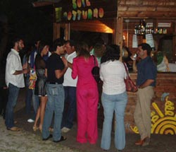
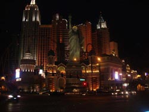
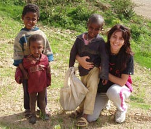

Home
La vita è un viaggio ... Un viaggio attraverso mille volti, attraverso i colori della vita, attraverso le luci e le ombre del quotidiano. Un viaggio perpetuo per non sentirsi mai ‘arrivati’, per non adagiarsi sugli allori delle proprie convinzioni a priori e per continuare a cercare. Cercare qualcosa che forse, alla fine, siamo noi stessi.
Mi chiamo Daniela Pruiti Ciarello, sono nata a Castell'Umberto in un piccolo paesino della Sicilia. Un paese troppo piccolo e stretto, e forse proprio grazie a questo fatto ho iniziato a viaggiare, dapprima con la mente poi realmente. Sin da piccola ho capito che l'arte e i colori non dovevano colorare soltanto i miei album da disegno ma anche la mia vita. Quindi finiti gli studi delle scuole superiori ho deciso di iscrivermi all'Accademia di Belle Arti a Palermo. Piena di aspettative e di sogni ho intrapreso il mio primo vero viaggio verso la ricerca della mia personalità e naturalmente l'ho fatto attraverso l'arte.
Accademia
Gli anni trascorsi in Accademia sono stati anni intensi, fatti di sacrifici, di piccole e grandi soddisfazioni, di sconfitte e di vittorie. Ho conosciuto tante persone, tanti amici che hanno contribuito a costruire le mura della mia esperienza ed hanno, a volte positivamente, a volte negativamente influenzato la mia personalità.
Finalmente arriva il grande giorno, la laurea. Tesi: ‘La pelle come opera d'arte’, era già esplosa dentro di me la mia passione per le altre culture e la tesi è stato il mio primo studio fatto sulla storia del tatuaggio, attraverso un viaggio tra i vari popoli che nel tempo hanno usato il proprio corpo come mezzo di espressione artistica.
Conclusa questa meravigliosa pagina della mia vita, torno a Castell'Umberto, dove mi aspettava un evento devastante per la mia vita, la morte di mio padre. Il tempo lenisce il dolore mi dicevano, ho imparato ad accettare ... ma questo è stato un momento senza colori nella mia vita.
Maurizio
Ma come diceva la frase di un film: ‘non può piovere per sempre’. Arriva il giorno che ogni donna sogna: il matrimonio. Un giorno indimenticabile. Mi sposo con Maurizio, che mi è stato accanto da quando avevo quindici anni fino ad oggi. Mi ha sostenuto in tutto, nelle mie scelte, mi ha aiutato a non far morire i miei sogni nei momenti di crisi. Adesso il viaggio della mia vita continua con lui.
Disco Pub
Dunque alla mia passione per l'arte si aggiunge la sua grande passione per la musica. Insieme trasformiamo un sogno in realtà! Apriamo un disco pub, ‘Il Sole Notturno’, nel mio paesino. Il nostro piccolo capolavoro è costruito tutto da noi, con materiali riciclati. ‘Il Sole Notturno’ ci ha fatto approfondire amicizie, ci ha fatto conoscere tanta gente, ragazzi, con cui abbiamo condiviso sempre e solo gioie.
America
Ma il sole non può brillare per sempre ed è quindi arrivato il momento di conoscere nuovi orizzonti: l'America, che io avevo già visitato ma adesso con Maurizio il viaggio avrebbe avuto tutto un altro colore. Itinerario Virginia (dove vive mia sorella), Los Angeles, Las Vegas. Un viaggio meraviglioso!
Tornati in Italia, ripiombiamo nella routine in cui ogni piccolo paese ti porta. Io nel frattempo apro un piccolo laboratorio di ceramica artistica cominciando a creare delle piccole collezioni d'arte, e contemporaneamente insegno disegno e storia dell'arte in un paio di scuole e tengo dei corsi di ceramica artigianale in alcuni paesi vicini.
Africa
La prossima esperienza è l'Africa. In questa fase della mia vita, ricca di emozioni, di soddisfazioni, più che mai, ho sentito il desiderio di fare qualcosa per gli altri. Un mese in un piccolo villaggio dell'Eritrea. In assoluto questo è stato il viaggio più profondo, più emozionante che mi ha arricchito dentro a 360 gradi. Un mese trascorso tra la gente, tra bambini, cercando di catturare con la fotografia, sguardi, sorrisi, pianti ed espressioni di quella gente. Cercando di apportare nel mio piccolo un umile contributo di aiuto umanitario a quella gente.
Australia
Finita quest'altra pagina della mia vita, i nostri cuori continuavano a coltivare il desiderio di viaggiare, questa volta la meta è l'Australia. Beh adesso sono in Australia ... come continua il mio sogno? Non lo so, so solo che voglio godermi ogni singolo momento che questa meravigliosa terra può regalarmi!
Ciarello, DP 2008, La vita e un viaggio, al3idee_per_communicare, Blog, viewed 8 September 2008, <http://al3idee.blogspot.com/search>.
Reproduced with the permission of Daniela Pruiti Ciarello.
Se vuoi sapere altro di Daniela visita il suo sito web www.al3idee.com.
Complete this worksheet to demonstrate your understanding of Daniela’s blog.